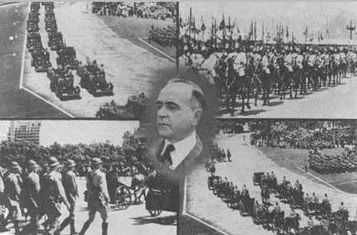
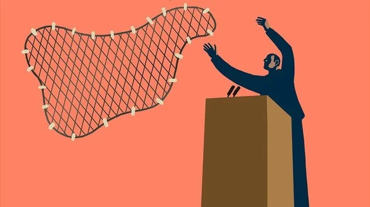

Brasil: Estado Novo e Populismo
Estado Novo
O Estado Novo corresponde ao período em que Getúlio Vargas (1882-1954) governou o Brasil entre os anos de 1937 a 1945, no último momento da Era Vargas, marcado pelo autoritarismo, censura e centralização do poder.

Getúlio Vargas, Ex-Presidente do Brasil
Em 10 de novembro de 1937, Getúlio Vargas realizou um Golpe que instaura o Estado Novo, que perduraria até 29 de outubro de 1945, quando, deposto por um movimento militar chefiado por generais, termina o governo Vargas.
Durante todo o período, sua política priorizou investimentos em infraestrutura para o desenvolvimento industrial.
Instauração do Estado Novo: Resumo
Em 1935 o governo havia reforçado sua propaganda anticomunista, o que legitimou o estado de sítio em fins daquele ano e a declaração de estado de guerra no ano seguinte.
Ora, em janeiro de 1938 estavam previstas eleições presidenciais; porém, aproveitando o momento de instabilidade política pelo qual passava o país, Getúlio Vargas deu um golpe de estado em 10 de novembro de 1937.
Note que a constituição de 1934 proibia a reeleição de Getúlio, o qual articula o chamado Plano Cohen, um documento que atestava o plano comunista para destituir o governo, o que foi depois desacreditado como uma fraude.
Todavia, fomentando o sentimento nacionalista em torno da ameaça do comunismo, a ditadura conquistou o apoio popular para legitimar sua investidura. Assim, Vargas anunciou na cadeia de estações rádio a nova Constituição de 1937, com inspiração claramente fascista.
Características do Estado Novo
O Estado Novo no Brasil (1937-1945) deve ser considerado no contexto mundial, onde assistimos a ascensão de várias ditaduras: Hitler na Alemanha, Stalin na URSS, Franco na Espanha, Salazar em Portugal, dentre outros.
Assim, argumentando que o regime constitucional vigente ‘perdera seu valor prático’, provocando um Estado de ‘desordem’ e ‘irresponsabilidade’, Getúlio Vargas determinou o encerramento das Assembleias Legislativas, da Câmara dos Deputados e do Congresso Nacional.
Também cerrou todos os partidos e organizações civis e deu início a caçada política e, em alguns casos, prisão e morte de opositores e inimigos do estado.
No plano político, passou a nomear interventores nos Estados, enquanto no plano cultural, o Estado Novo caracterizou-se como um período em que a constituição de uma identidade nacional era a meta a ser atingida.
Assim, a "antropofagia cultural" fundamentou alguns dos aspectos do regime, que se associou a pensadores como Carlos Drummond de Andrade, Oscar Niemeyer, Lúcio Costa e Cândido Portinari, bem como fora responsável pela criação do Serviço do Patrimônio Histórico e Artístico Nacional (SPHAN), de Mário de Andrade.
Criações do Estado Novo
- Tornou obrigatória a disciplina de "Educação Moral e Cívica" nas escolas;
- Institui um novo valor cambial: o cruzeiro;
- Concepção da Companhia Siderúrgica Nacional (CSN), a Vale do Rio Doce;
- Criação do Departamento de Imprensa e Propaganda (DIP) para controlar rádios e jornais e do Departamento Administrativo do Serviço Público (DASP), em 1938 para fortalecer a máquina pública e a burocracia e fiscalizar os governos estaduais;
- Controle dos sindicatos;
- Implementação da CLT (Consolidação das Leis do Trabalho) em 1943, garantindo vários direitos aos trabalhadores;
- Criação da Justiça do Trabalho, da carteira de trabalho, salário mínimo, descanso semanal remunerado, jornada de trabalho de oito horas e regulamentação do trabalho feminino de menores de idade;
- Surgimento do Conselho Nacional do Petróleo (CNP), o qual, mais adiante, virá a ser a Petrobras, no ano de 1953;
- Concretização da Companhia Hidrelétrica do São Francisco e da Fábrica Nacional de Motores (FNM);
- Decreto do Código Penal e do Código de Processo Penal Brasileiro.
Populismo
Populismo é uma prática política cujo líder toma para si o cargo de salvar o país e o povo.

O populismo se reveste de promessas dirigidas a setores vulneráveis da população, ao mesmo tempo em que trata a elite como inimigo.
Esta estratégia remonta ao Império Romano e reapareceu em vários países no século XX.
Atualmente, o termo “populismo” é usado pejorativamente para ofender adversários políticos.
Características do Populismo
Política
O populismo critica o liberalismo político e seus representantes colocam-se por em cima dos partidos políticos.
Por isso, é primordial o contato direto entre as massas urbanas e o líder, pois se evita toda intermediação de partidos ou corporações nesse processo.
A fim de criar uma identidade e ilusão de participação políticas são organizadas concentrações populares e festas para incluir grupos sociais historicamente marginalizados da cena política.
O povo é apresentado como uma entidade bondosa, justa e guardiã dos valores da nação. Quem não se enquadra nesta descrição é chamado de anti-povo.
Economia
O populismo realiza políticas nacionalistas de substituição de importações, estatização de atividades econômicas estratégicas, imposição de restrições ao capital estrangeiro e concessão de direitos sociais.
O resultado é um endividamento público brutal, pois estas políticas desestimulam o setor produtivo.
Cooptação
Vários recursos são utilizados pelo líder para obter apoio popular. Esses artifícios vão desde a linguagem simples e popular, propaganda pessoal massiva e simplificação de problemas complexos através de recursos retóricos como a falácia e demagogia.
Desta maneira, o populismo prepara o terreno para a concretização de medidas autoritárias que desrespeitam os partidos políticos e instituições democráticas.
Por isso, além do autoritarismo e assistencialismo, os governos populistas controlam os meios de comunicação para que sejam instrumento de divulgação das ações governamentais.
Estratégias Populistas
O político populista lança mão de efeitos retóricos e de propostas irrealistas para beneficiar os setores mais populares. Por outro lado, busca limitar o poder das elites políticas tradicionais, consideradas rivais.
Enquanto filosofia política, afirma os direitos e o poder dos desfavorecidos em detrimento dos privilégios da elite.
Assim, apesar das melhorias na qualidade de vida das populações envolvidas, o populismo não deve ser confundido a democracia plena. Esta preserva os direitos do cidadão e mantêm sua liberdade, o que não acontece em regimes populistas.
Igualmente, o líder e o povo tornam-se dependentes um do outro através da troca de favores. Isso gera práticas como o Clientelismo onde as pessoas são vistas como seres úteis apenas para as eleições e não cidadãos de pleno direito.
Populismo no Brasil
O principal líder populista no Brasil foi o presidente Getúlio Vargas.
Durante seu governo, especialmente na época do Estado Novo, foram utilizadas técnicas de captação populista: discurso nacionalista, engrandecimento da figura do líder e participação do povo para festas cívicas.
Enquanto isso, não havia eleições presidenciais, os meios de comunicação eram censurados e a polícia política vigiava os inimigos internos e externos.
Seguiram-se os governos de JK e Jânio Quadros, considerados populistas na medida que seus líderes se apresentavam como aqueles que tinham a solução para os problemas do país.
Populismo Hoje
Os governos populistas voltaram à cena política no século XXI após o esgotamento do modelo neoliberal.
Na América Latina, observamos líderes como Hugo Chávez, na Venezuela e Cristina Kirchner, na Argentina.
Por sua vez, na Europa, o populismo está ligado aos partidos de direita como o italiano "Liga Norte", encabeçado por Matteo Salvini. Na França, a "Frente Nacional", da deputada Marine Le-Pen, cresce a cada eleição.
Também o governo de Donald Trump, nos Estados Unidos, e de Recep Tayyip Erdoğan, na Turquia, são considerados populistas.
Principais Regimes e Líderes Populistas
Com representantes tanto na esquerda quanto na direita, o populismo moderno é um fenômeno típico dos anos de 1920, especialmente após a crise de 1929.
Na América Latina, ele surgiu a partir de 1930, quando crescem a industrialização e a urbanização. Em consequência, se registra o enfraquecimento das estruturas políticas oligárquicas e agrárias.
No Brasil, surgiu com o advento da Revolução de 1930, a qual derrubou a República Velha oligárquica e estabeleceu Getúlio Vargas no poder.
Por fim, os movimentos populistas ganharam força nas democracias do primeiro mundo a partir dos anos de 1980, sobretudo no Canadá, Itália, Nova Zelândia e países escandinavos.
Exercícios logo abaixo, clique no botão para aparecer

(Enem/2017) Durante o Estado Novo, os encarregados da propaganda procuraram aperfeiçoar-se na arte da empolgação e envolvimento das “multidões” através das
mensagens políticas. Nesse tipo de discurso, o significado das palavras importa pouco, pois, como declarou Goebbels, “não falamos para dizer alguma coisa,
mas para obter determinado efeito”.
O controle sobre os meios de comunicação foi uma marca do Estado Novo, sendo fundamental à propaganda política, na medida em que visava:
(Enem 2011) “A consolidação do regime democrático no Brasil contra os extremismos da esquerda e da direita exige ação enérgica e permanente no sentido do
aprimoramento das instituições políticas e da realização de reformas corajosas no terreno econômico, financeiro e social.”
Mensagem programática da União
Democrática Nacional (UDN) – 1957.
“Os trabalhadores deverão exigir a constituição de um governo nacionalista e democrático, com participação dos trabalhadores para a realização das
seguintes medidas: a - Reforma bancária progressista; b - Reforma agrária que extinga o latifúndio; c - Regulamentação da Lei de Remessas de Lucros.”
Manifesto
do Comando Geral dos Trabalhadores (CGT) – 1962.
BONAVIDES, P; AMARAL, R. Textos políticos da história do Brasil. Brasília: Senado Federal, 2002.
Nos anos 1960 eram comuns as disputas pelo significado de termos usados no debate político, como democracia e reforma. Se, para os setores aglutinados em torno da UDN, as reformas deveriam assegurar o livre mercado, para aqueles organizados no CGT, elas deveriam resultar em: